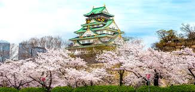

Japão
O Japão, país insular no Oceano Pacífico, tem cidades densas, palácios imperiais, parques nacionais montanhosos e milhares de santuários e templos. Os trens-bala Shinkansen conectam as principais ilhas: Kyushu (com as praias subtropicais de Okinawa), Honshu (onde ficam Tóquio e a sede do memorial da bomba atômica de Hiroshima) e Hokkaido (famosa como destino para a prática de esqui). Tóquio, a capital, é conhecida por seus arranha-céus e lojas e pela cultura pop.
Situado em uma das áreas mais geologicamente instáveis do mundo, o Japão possui um relevo montanhoso que influencia a distribuição de umidade pelo país. Dois climas são predominantes, o temperado e o tropical. O país possui uma população de mais de 126 milhões de habitantes, além de uma economia altamente desenvolvida e reconhecida pela utilização de avançada tecnologia no setor industrial.
| Indústria | Principais Empresas | Descrição |
|---|---|---|
| Automobilística | Toyota, Honda, Nissan | O Japão é um dos maiores produtores de carros do mundo. |
| Tecnologia | Sony, Panasonic, Toshiba | Empresas líderes em eletrônicos e tecnologia. |
| Alimentação | Ajinomoto, Asahi, Kirin | Japão é famoso por sua culinária e bebidas, como o saquê e o chá verde. |
| Trens de Alta Velocidade | JR (Japan Railways) | O Japão foi pioneiro no desenvolvimento dos trens-bala (Shinkansen), conhecidos pela velocidade e eficiência. |
Dentro do Japão, tem algumas cidades específicas que eu adoraria visitar:
Tóquio
Dentro da região de Kanto, Tóquio é a cidade mais famosa do Japão, sendo sua capital e sede do governo nacional,
conhecida por ser a metrópole mais populosa do mundo. Repleta de bairros turísticos, templos e parques, atrai milhares de turistas o ano todo.
Possui vários pontos turísticos como templos budistas, santuários famosos, parques e jardins. A prefeitura é um dos pontos mais visitados.Aproximadamente 2 milhões e meio de pessoas visitam a metrópole.
Clique aqui para saber mais sobre esse lugar

Osaka
Dentro da região de Kansai, Osaka é uma cidade charmosa e descontraída, mais conhecida por sua culinária, entretenimento e vida noturna - entremeados com um pouco de história e cultura. Osaka fica a apenas uma curta distância de Tóquio por trem-bala,mas é uma cidade muito diferente da capital do Japão. Junto com muitas lojas e atrações modernas, Osaka também tem um lado histórico, cujo destaque é o Castelo de Osaka.
Clique aquipara saber mais sobre esse lugar
Okinawa
A província mais ao sul do Japão, Okinawa é um arquipélago com uma história de reino independente.
A região possui clima subtropical bastante característico.
Antes de pertencer ao país, Okinawa era parte do reino Ryukyu,
por isso possui cultura, idioma, história e gastronomia próprios, diferenciados do resto do país
os Estados Unidos ainda mantém bases militares no arquipélago.
Clique aqui para saber mais sobre esse lugar